Explore the complete collection in the index.
Click the scene before using keyboard shortcuts. Click a thumbnail to open the project.
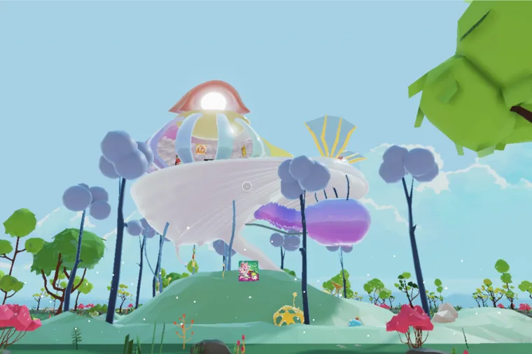
8 imagesDigital space
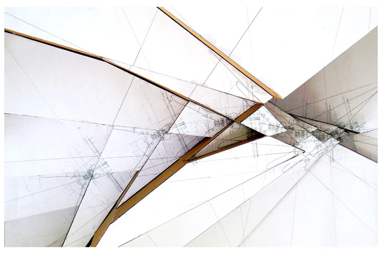
3 imagesArchitectural design
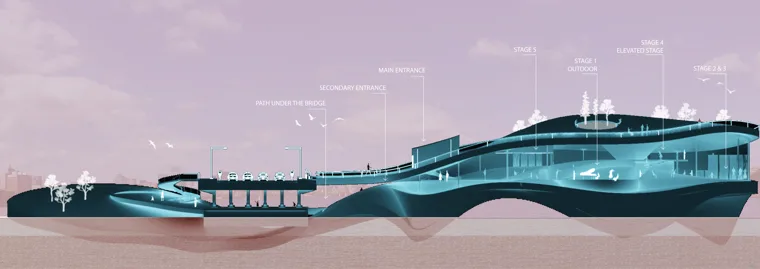
4 imagesArchitectural design
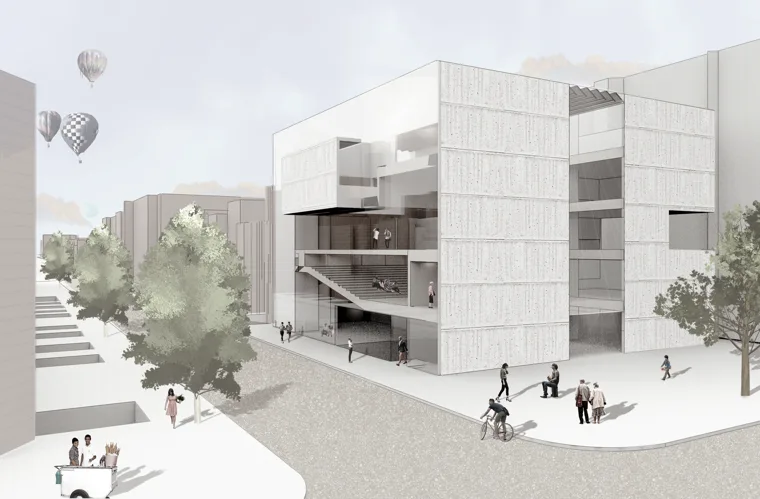
5 imagesArchitectural design
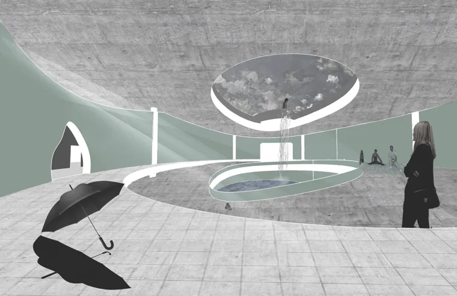
8 imagesArchitectural design
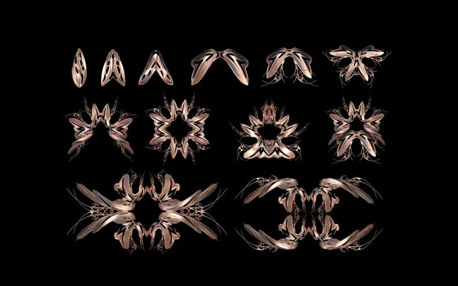
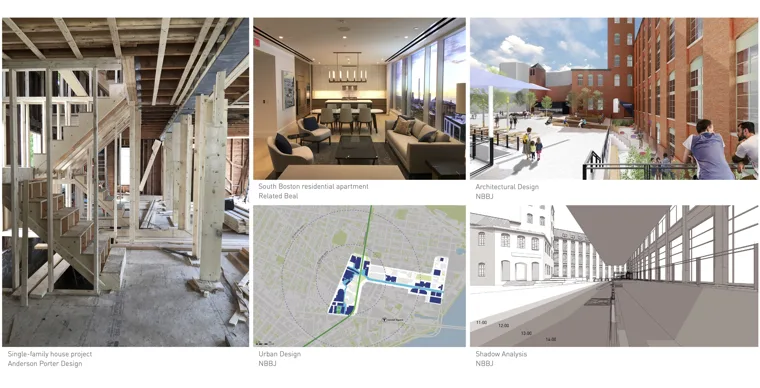
1 imagesArchitectural design
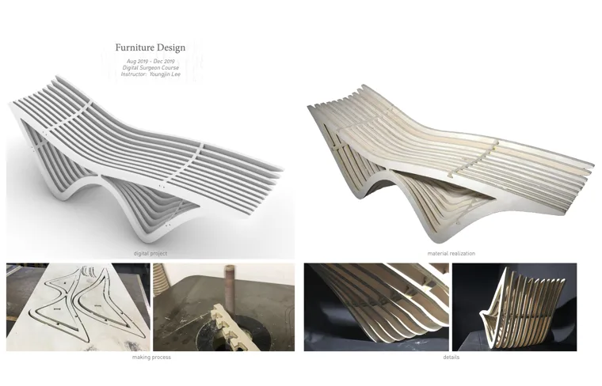
5 imagesObjects & fabrication
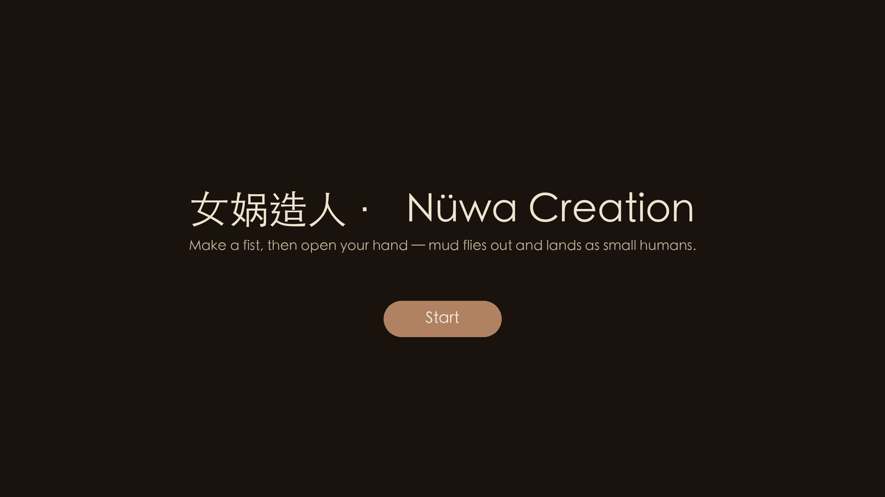
Open project ↗Developer
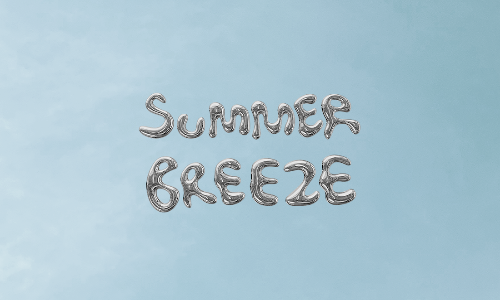
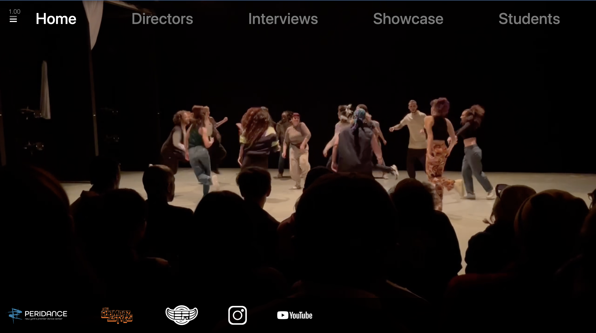
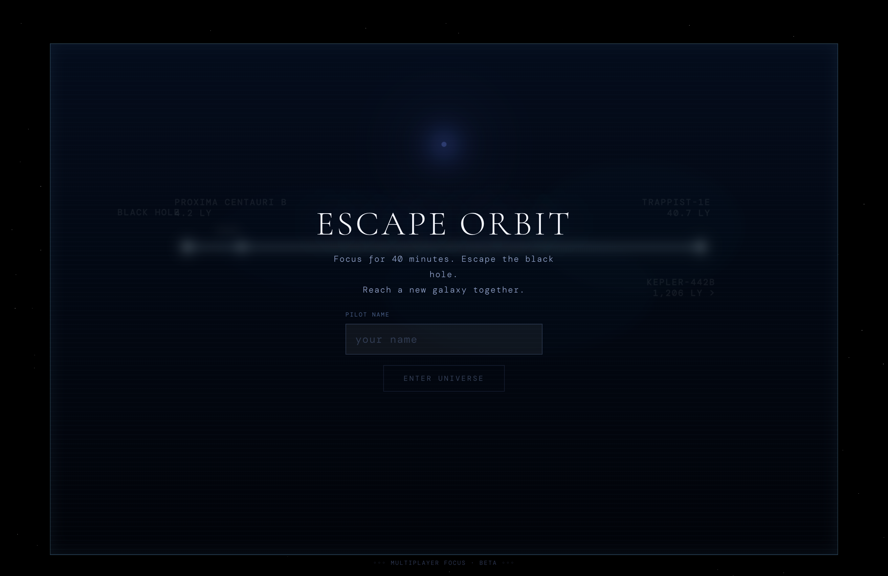
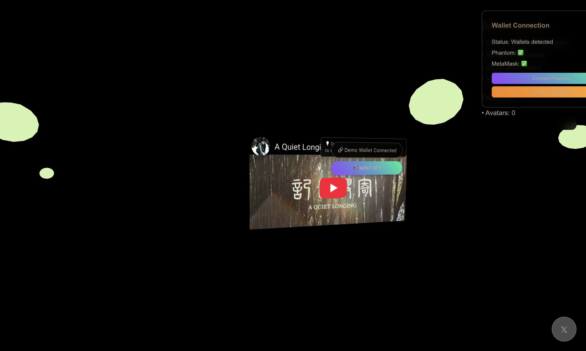
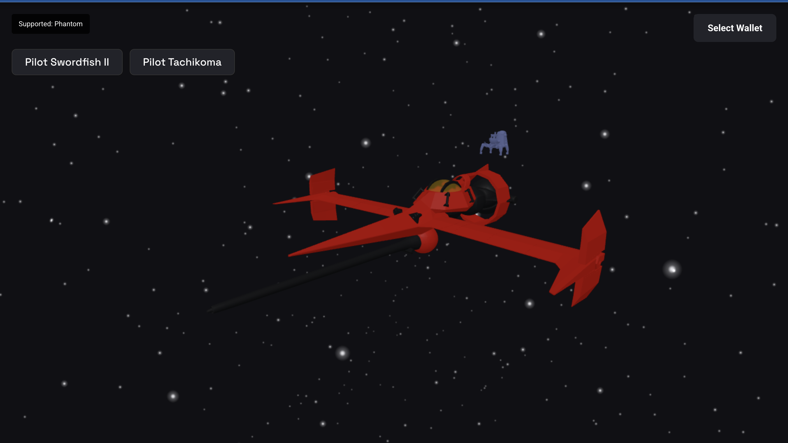
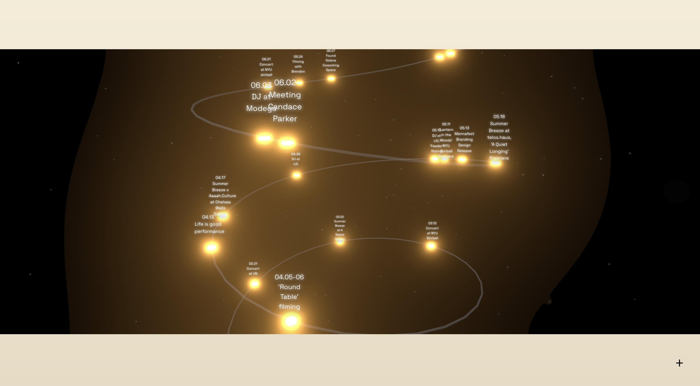
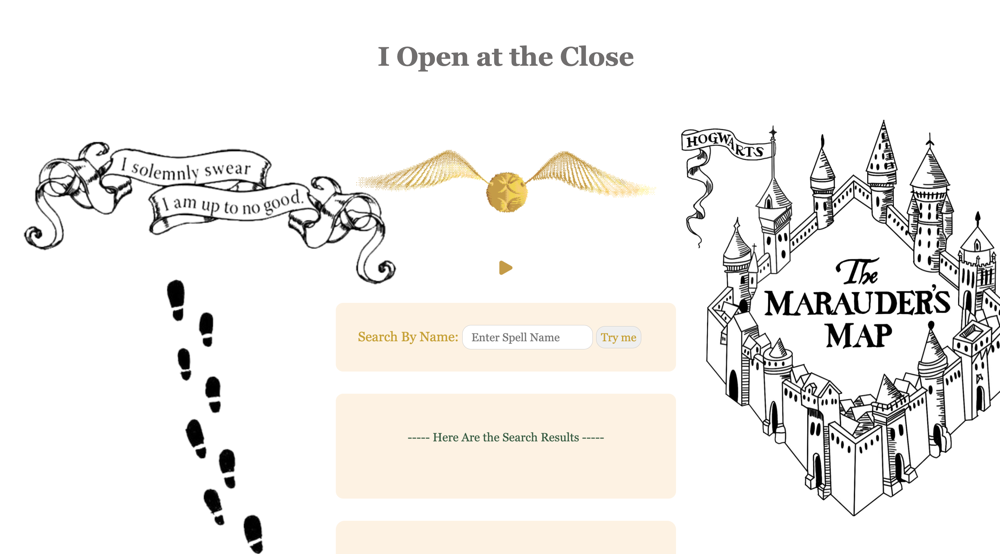
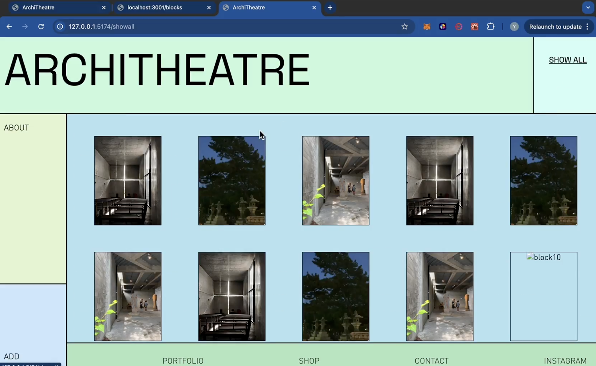
Architectural and digital designer based in New York. Working across architecture, virtual spaces and digital fabrication.
Master of Architecture, Boston Architectural College. A background in software engineering and performance brings interaction and movement into my spatial practice.